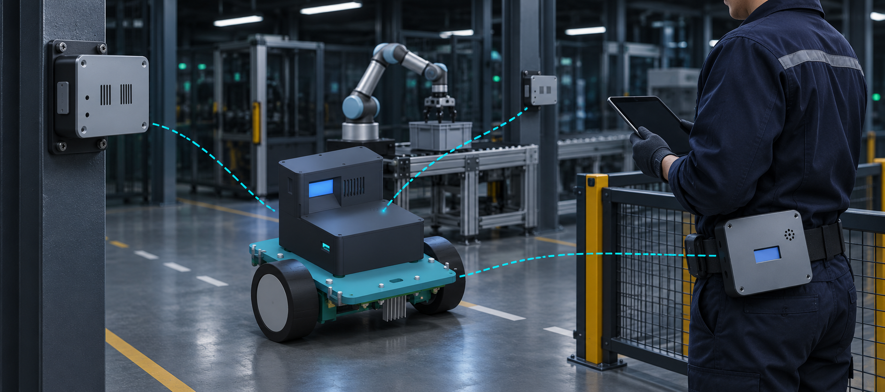

DELTA · Dark Factory Platform

UWB Localization · Safety · Automation
ภาพจำลองอ้างอิง CAD ของทีม
Inside a Dark Factory
สายพาน → Cobot → AGV
AGV วิ่งตามเส้นนำทาง
Human Intervention
ช่างเข้าทางซ่อมบำรุงข้างฐาน Cobot
ช่างกำลังเข้าพื้นที่ซ่อมบำรุง
Location-Awareness
จุดรับของอยู่นอกเส้นทางหลัก
AGV วิ่งตามเส้นหลัก · กล่องกำลังมาถึงจุดรับ
Why UWB?
LiDAR · สแกนจากรถที่กำลังวิ่ง
UWB · พิกัดร่วม (X, Y)
ชั้นวางบังลำแสง · คนอยู่ในมุมอับ
Anchor A1–A4 ติดสูงที่มุมห้องทั้งสี่
ฉากจำลอง · DS-TWR · UWB อาจคลาดเคลื่อนจาก NLOS และ multipath
Distance-based Safety
Digital Twin
UWB→Distance→Safety logic→PWM / Relay / Buzzer
SAFE
สายพานเดินปกติ · ล้อ AGV ทั้งสองหมุนเต็มความเร็ว
TAG AGV / TAG Belt ↔ A1–A4
WHEEL PWM100%
CONVEYORRUNNING
BUZZEROFF
UWB Calibration
Held-out range RMSE · P9 + P1 return17.71 → 16.15 cm−8.85%
Anchor A4 · Held-out10.36 → 2.99 cm−71.15%
50,748range readings
ปัจจุบัน · UWB รู้ตำแหน่ง
ฉากจำลอง · UWB 4 Anchors / 2 Tags
Belt Tag ที่เอวช่าง · AGV Tag บนรถ
ช่างกำลังเข้าสู่โซนซ่อมบำรุง
มีพิกัด X,Y บน Dashboard · REST / MCP อ่านข้อมูล
อนาคต · เครื่องจักรประสานงานกัน
แนวทางต่อยอด · Dark Factory